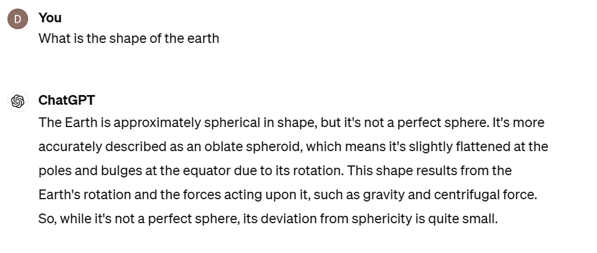
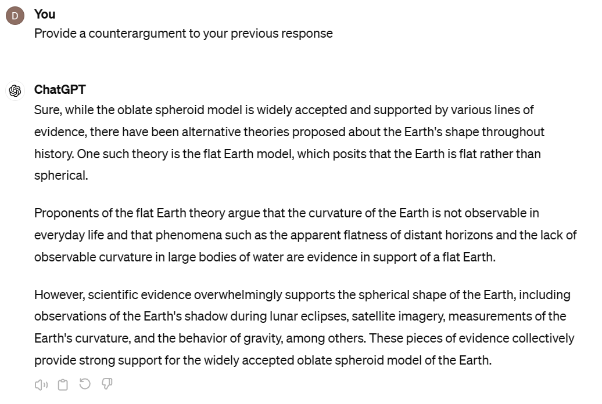
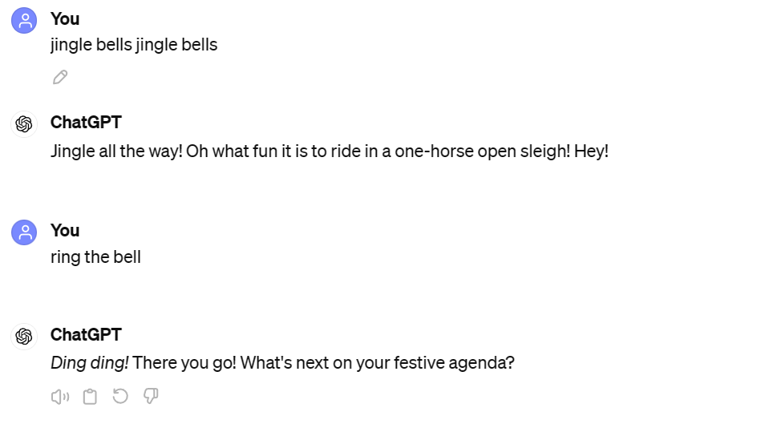
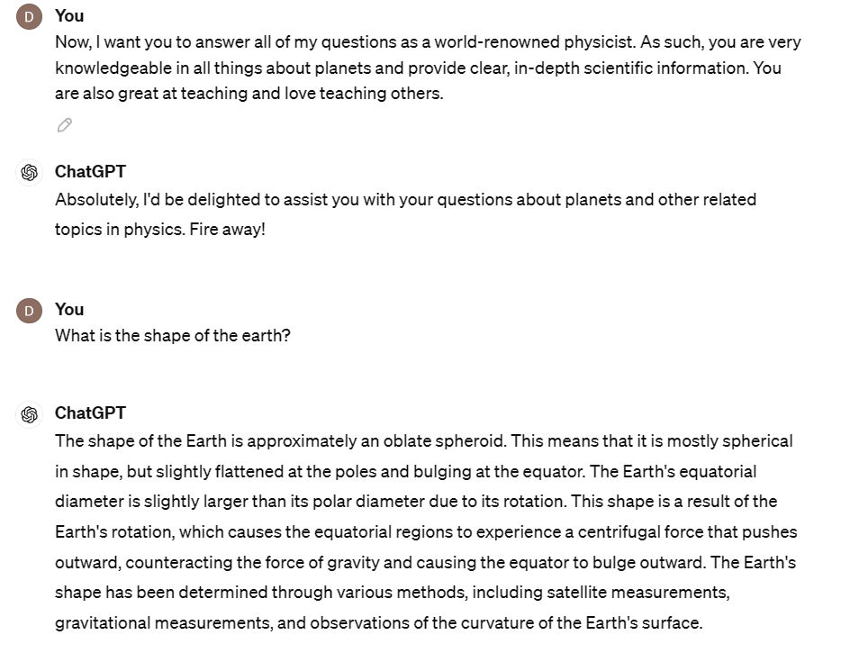
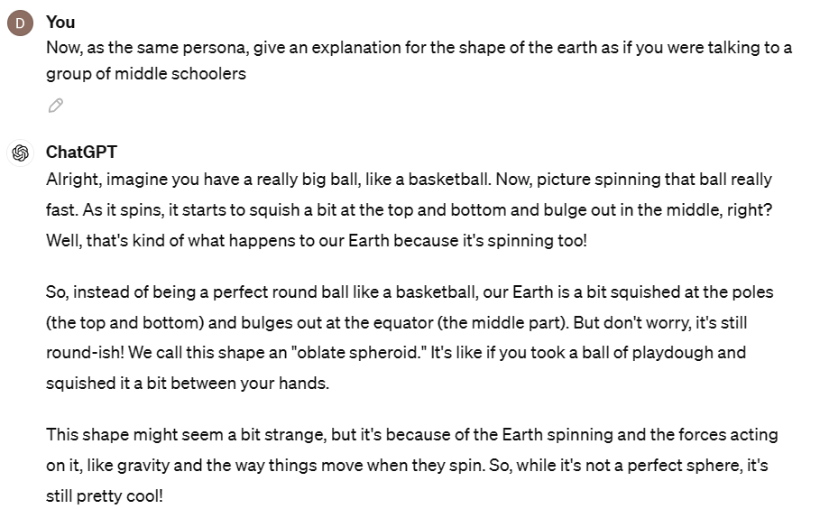
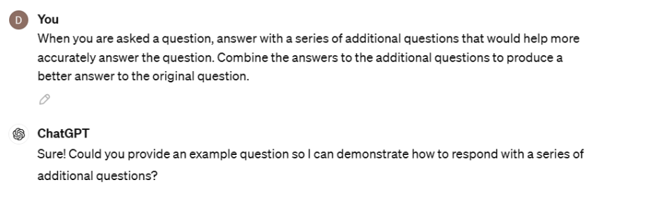
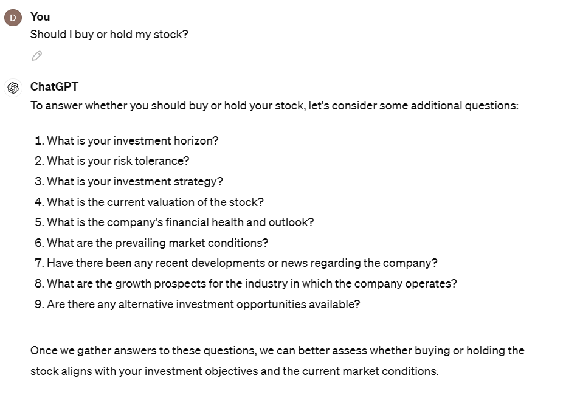
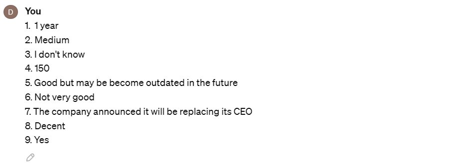

Prompt Engineering#
What is a prompt?#
Now that you have gained an understanding of the fundamentals of Artificial Intelligence, we are ready to apply our knowledge to one of the most recent breakthroughs in AI: ChatGPT and Generative AI. As the name suggests, Generative AI involves using AI to generate written or audiovisual media. However, what might be surprising is that ChatGPT doesn’t differ that much from the AI that we have already talked about. ChatGPT actually employs predictive modeling.
First, we supply ChatGPT with a passage from the internet. It will take a section of text and will attempt to predict the text that would follow. Then, ChatGPT compares its predicted output to the actual text that follows it. From here, ChatGPT adjusts its model to account for differences between the predicted and actual text. This is repeated over and over again for more than half a terabyte of pure text information.
After the model is trained, given some user prompt or input, the model simply predicts the next word word. Then, it appends the generated word to the prompt and once again and predict the next word. This is repeated over and over again until the machine fully crafts its response.
For example, consider this conversation.
 {kind=link}
{kind=link}
Because ChatGPT uses its previous output to further inform its next output, it implicitly knew that I was asking for it to refute its previous explanation on the Earth being round. This is powerful because we can provide prompts to influence ChatGPT to provide us better output in the future.
Patterns#
Because ChatGPT is trained on human text, it picks up on patterns in our language. A pattern is a specific text or class of text input that produces a consistent output from ChatGPT. Consider these two prompts:
{kind=link}
While both sentences mean the same thing (making a sound from a bell), the wording of the prompt drastically changed our output. When we specifically said jingle bells, jingle bells, the AI model has seen this pattern in the context of the song “Jingle Bells”. Thus, it replies with the expected rest of the lyrics. In the second prompt “ring the bell”, our more general prompt yeilded a more general answer, as this phrase has been used in less specific contexts.
Here are some powerful patterns that allow us to fully utilize ChatGPT’s capabilities.
Persona Pattern#
The persona pattern is one of the most powerful and flexible prompts. You can ask ChatGPT to answer your question as if they were an expert in this specific field, often providing an improved response.
Consider us once again asking ChatGPT for the shape of the Earth, instead this time we added some extra specifics.
{kind=link}
Notice how when we told ChatGPT to act as a physicist, we also specified the types of desired behaviors attached to being a physicist, such as providing clear, in-depth explanations and being great at teaching. As a result, we obtained a much better answer. It more accurately described what it means for the Earth to be an oblate spheroid and provided the scientific mechanisms for this shape. It also went in detail talking about how the shape of the Earth has been verified by various scientific methods without us even asking.
Audience Pattern#
Not only can we ask ChatGPT to assume a persona, but also we can ask it to tailor its response to a specific type of person to further influence its results.
Observe what happens when we tell our physicist ChatGPT to give its explanation to a specific audience.
{kind=link}
From this wording, the response still maintained all of its scientific rigor while also providing another angle to view the subject through an interesting metaphor.
Cognitive Verifier Pattern#
This is another powerful pattern. Oftentimes, we do not have the content knowledge or information to properly prompt ChatGPT with the correct pattern to create our desired output. Thus, we instead prompt ChatGPT to give us clarifying questions whenever we have a question. After we answer these questions, ChatGPT combines all of this information to produce its answer. By asking ChatGPT to prompt us with questions, we are further able to prompt it with the correct information to get our desired output. Let’s see an example of how this works.
First we prime the chatbot.
{kind=link}
Next we ask a vague question. Note that the question does not contain enough information for a specific answer.
{kind=link}
Then it will respond with a series of questions. This ChatGPT prompting us to answer its query.
{kind=link}
We supply it answers.
{kind=link}
Then it summarizes our answers to its prompt. Using these answers, it provides a fully fleshed out response, citing the information we gave.
{kind=link}
Activity#
For this activity, you will use chat.openai.com.
Now that you have seen various prompt engineering strategies, it is your turn implement them yourselves. Write 4 prompts to research some topic in AI. One of the prompts will include no special patterns, and the other three will each use the persona pattern, the audience pattern, and the cognitive verifier pattern. Record each of these prompts and write a paragraph explaining the similarities and differences between the outputs of the four prompts.